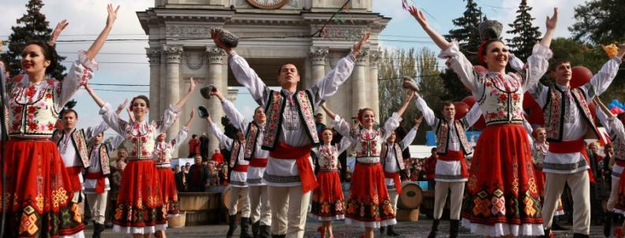

Despre Republica Moldova :
Amplasată în Europa de Est, Moldova este o ţară cu un potenţial turistic bogat, dar slab cunoscut. Mărginită de România la vest şi de Ucraina la nord, sud şi est, acest colţ de pamânt merită cu prisosinţă calificativul de “colţ de rai”.
Clima Moldovei este una temperată. Datorită celor 4 anotimpuri, împrejurimile de fiecare dată arată diferit – primăvara în muguri şi arome de flori, vara în bătăia blândă a razelor de soare şi farmecul fructelor, toamna în frunzele multicolore şi desigur în savoarea strugurilor şi iarna în puritatea zăpezilor. De fiecare dată privirea e fermecată.
În cursul râurilor Nistru, Prut, Răut se arată nişte peisaje uimitoare, care taie răsuflarea, cu atât mai mult că râurile sunt navigabile, fiind o placere deosebită de a călători pe apă cu pluta sau barca.
Mândria Moldovei sunt peisajele naturale, în unele locuri virgine şi enigmatice; sunt locurile istorice şi fortificaţiile care poartă suflul istoriei şi cel al victorioaselor bătălii; sunt vinurile şi beciurile care concureză cu cele franceze; sunt bisericile şi mănăstirile în a căror construţie s-a depus suflet ca urmare devenind lăcaşe de pribegie şi tămăduire a sufletului; mândria Moldovei sunt oamenii băştinaşi care crează spiritul ospitalităţii în mica noastră ţară.
De-a lungul istoriei teritoriul Moldovei (între 1812-1918 cu denumirea de Basarabia, provincie a Imperiului Ţarist Rus) a fost o punte de legătură de la hotarul de est al Europei către cel de vest şi Balcani. După războiul ruso-turc din 1812, populaţiei creştine de origine turcă din Dobrogea românească şi cea din Zaporojie (Ucraina) li s-a propus să se stabilească în Basarabia, astfel cu trecerea secolelor astăzi la sudul Moldovei, în stepa Bugeacului descoperim Gagauzia (Gagauz Yeri cu centrul în oraşul Comrat). Din 1994 Gagauzia este unitate teritorial autonomă.
După cel de-al doilea război mondial, Moldova este încorporată în Uniunea Sovietică (1944-1991), iar din perioada interbelică din teritoriul Moldovei face parte şi Transnistria (Republica Moldovenească Nistreană, centrul administrativ fiind Tiraspol). După conflictul armat din 1992, autorităţile transnistrene au autoproclamat independenţa, iar autorităţile Moldovei au pierdut controlul asupra acestei porţiuni din est.
După obținerea independenţei Republica Moldova a păstrat frumoasele sărbători şi tradiţii, încântând prin bucătăria naţională deliciosă şi cel mai important ecologică, cât şi prin obiceiurile şi cultura moldovenească.
Nu ezitaţi să veniţi în Republica Moldova pentru a o cunoaşte în toată splendoarea.
Întotdeauna m-am mirat cum poţi să rămâi un prost în mijlocul unei Limbi atât de frumoase şi înţelepte cum este Limba Română?
- Grigore Vieru